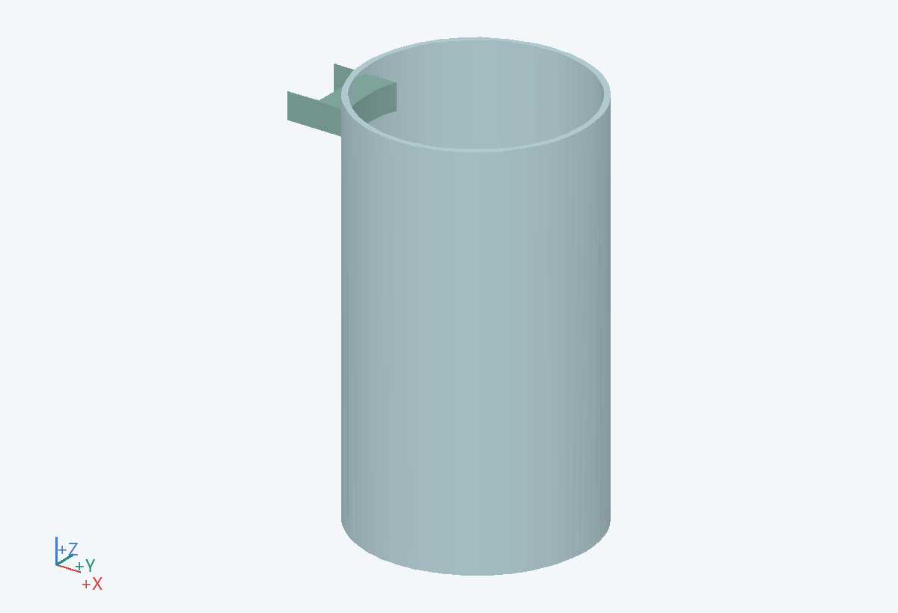
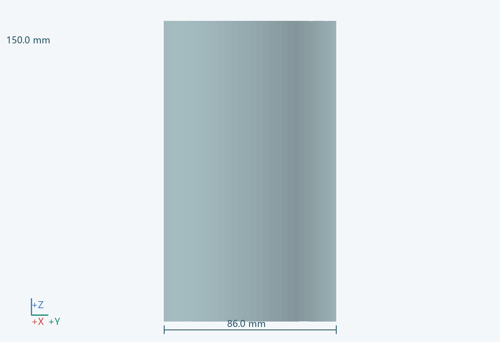
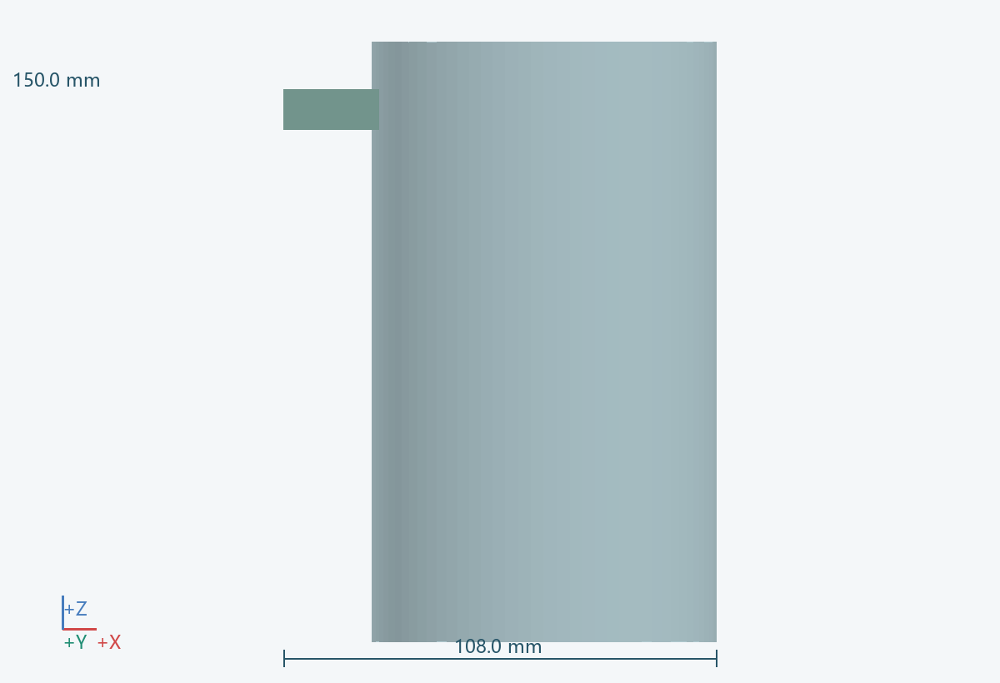
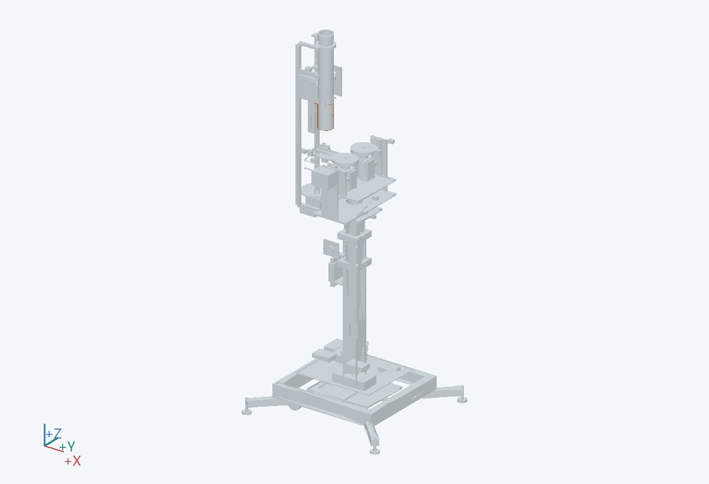

108.0 × 86.0 × 150.0 mm（含所示实例）
落球时引导球进入托架；转头前收回，让整只球脱离固定结构。
回缩时套在 0601 外径 80 外；直径间隙 2 为示意，另设导轨保证不擦管。
轻质光滑管及导向滑块
取下快拆导轨后向下拆套。
自由落球、裙部擦碰、下端与低位夹爪及上下限位都需验证；不是已解决的供球机构。 关联：U04/U06
PRT-0606, PRT-0606-A